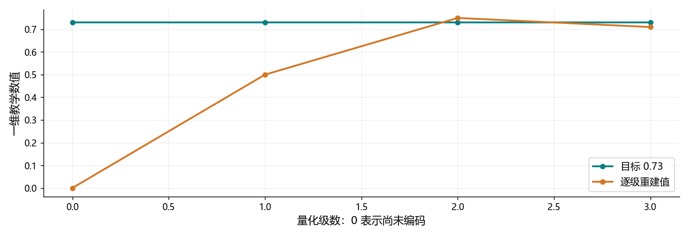

看图理解 · 跟着推演 · 对照真实结果
专题 · 语音大模型：音频单元、码率与全双工
从一个三级残差量化小例子出发，理解音频 token 怎样进入生成与交互系统。
点播放开始；点右侧小节可跳到不懂的部分。进度保存在当前浏览器。
先看视频，再动手
不必先读完正文。跟着视频暂停预测，看到运行图时解释横轴、纵轴和曲线，再做下面的自测。完整图文保留作查阅；视频讲清本课核心算例，不把看完等同于掌握全部专题。
先修：采样率、向量、ASR、TTS 和流式缓存；Transformer 可作为后续进阶。
- 分清采样编码、压缩编码和模型表示
- 手算残差量化与原始索引码率
- 解释语音助手的链路和打断要求
跟着运行：注释代码、实际输出与结果图
下面代码在生成本站时实际执行。这里只是教学小实验，不是完整模型训练或业务设备测评。
import numpy as np
# 一维教学 RVQ：每级表示当前剩余误差
target = 0.73
books = [np.array([0., 0.5, 1.]), np.array([-0.25, 0., 0.25]), np.array([-0.04, 0., 0.04])]
residual, reconstruction = target, 0.
values = [0.]
for book in books:
chosen = book[np.argmin(np.abs(residual-book))]
reconstruction += chosen
residual = target-reconstruction
values.append(reconstruction)
print("选", round(chosen, 2), "残差", round(residual, 2))
stage = np.arange(4)
estimate = np.array(values)
truth = np.full(4, target)
print("示例码率", 50*8*10, "bit/s")
本次实际输出
选 0.5 残差 0.23 选 0.25 残差 -0.02 选 -0.04 残差 0.02 示例码率 4000 bit/s

闭卷自测：每秒50帧、每帧8码本、每索引10bit，原始定长索引码率是多少？
50×8×10=4000 bit/s，即500 byte/s；未计封装、熵编码和其他元数据，也不同于PCM采样率。
逐字讲稿 · 可定位回看
同样听到编码器这个词，可能指采样后保存数字，也可能指压缩音频，或者为识别模型提取特征。先问输入输出和训练目标，不要看到名字相似就认为内部一样。
文字 token 通常组织文本序列，音频 token 可能携带重建音色、韵律等声学细节，也可能更强调语义。两者不是简单一一对应，更不一定一个 token 等于一个汉字。
这课用一个一维数值零点七三演示残差量化，再把这个小动作放回语音系统。我们不下载大模型，也不把玩具数值恢复当成真实音质测试。
神经编解码器先把高采样率波形变成较稀疏的连续向量。向量量化再从有限码本里选最接近的条目，用条目编号表示它，最后解码器利用这些信息生成波形。
可以把码本看成一盒有限积木，输入向量要用盒里已有积木近似表示。这个类比帮助理解离散选择，但真实模型的码本和编码器通常通过训练共同适应数据。
索引编号本身没有固定的人类语义，编号七不一定就是某个字。换模型、换码本，编号意义可能完全改变，不能像词典一样随意替换后期待声音仍正确。
目标是零点七三，第一层码本只有零、零点五和一。它们与目标距离分别零点七三、零点二三、零点二七，所以最近的是零点五。
此时重建值零点五，尚未表示的残差是目标减重建，也就是零点二三。残差不是新目标声音，而是当前表示还缺少的那部分信息。
如果只用这一层，就用一个粗近似结束。更多层可能逐步补细节，但每增加索引都增加传输和生成负担，因此表示精细度与成本要一起考虑。
第二层候选是负零点二五、零和零点二五。当前残差零点二三最近零点二五，所以累加重建变成零点七五，残差变成负零点零二。
第三层有负零点零四、零和零点零四。负零点零二恰好位于前两个中间，代码选择遇到的第一个，所以重建变成零点七一，残差变正零点零二。
这个特意保留的并列情况说明，多一层不保证每个样本误差严格变小，本例绝对误差保持零点零二。真实系统也需要评价，而不是看到层数变多就宣布音质提升。
另取一个码率示意：每秒五十个编码帧，每帧八个码本，每个码本一千零二十四个条目。因为二的十次方是一千零二十四，每个索引用十比特可表示。
每秒五十乘八乘十，等于四千比特每秒，也就是每秒五百字节的原始定长索引。这里是索引数据，不代表所有网络包和文件最终只有这么大。
若各码本大小不同，应把每个索引位数分别相加；封装和熵编码也会改变实际码率。这个八级码率例子与刚才三级玩具码本不同，不能把两组配置混在一起。
代码把三个小码本放进列表，初始重建为零，残差就是目标零点七三。每轮计算残差到所有码字的绝对距离，argmin 返回最小位置，取出相应码字。
选中的码字加到已有重建，再用目标减新重建得到下一层残差。保存每级值是为了画出零、零点五、零点七五、零点七一的实际路径，而不是事后手写图。
第三层并列距离时取第一个条目，这是当前实现的明确规则，不代表所有量化器都一样。最后打印四千码率只演示另一个配置的乘法，不宣称这段代码实现真实音频压缩。
横轴零表示还没有编码，之后每步是一个量化层。目标线固定在零点七三，重建先到零点五，再到零点七五，最后到零点七一，和打印完全一致。
第二层误差绝对值零点零二，第三层还是零点零二，只是从目标上方到了下方。这是并列选择的结果，让我们看到增加步骤并不自动产生严格改善。
这里没有声学编码器、训练码本或波形解码器，因此不能计算自然语音质量，也不能声称复现了某个开源编解码器。它只帮助你理解残差逐层传递的运算。
级联系统先识别成文字，语言模型组织回答，再合成声音。模块边界清楚，方便定位是听错、答错还是读错，但前级错误会传递，等待时间也可能叠加。
音频理解模型可以通过音频编码器和对齐模块把声音表示送入语言模型；语音到语音系统可能生成文字、音频单元或交错序列。要看具体结构，不能只凭端到端三个字猜。
音频时间步通常比文字多，序列过长增加计算和缓存成本；下采样过强又可能丢细节。学习 Transformer 后，再用这些真实形状理解掩码、缓存、对齐和参数高效适配。
系统一边播放回答，一边从麦克风收音，自己的扬声器也会被录进去。若回声消除失败，识别器可能把系统话语当用户输入，造成错误轮次甚至自我对话。
真正插话时，需要检测用户、停止或冲刷已排队播放、取消旧生成，并拒收迟到的旧轮次结果。仅清空当前列表不够，后台生成还可能继续送来旧声音。
评价应包含误打断、漏打断、停止播放耗时、首音频延迟和长对话稳定性。并发运行只是实现方式，不是已经实现可靠全双工交互的证据。
自测：音频 token 是否一定对应文字？不是。八码本十比特五十帧每秒的原始码率是多少？四千比特每秒。它包含网络封装吗？没有，需要另算。
你的入门项目可以先固定识别器和合成器，做一套领域问答语音链路，记录端点、生成、播放和打断时间。只替换一个模块，观察收益是否以错字或等待为代价。
进阶再学习音频文本对齐、指令微调和适配，而不是第一周就训练最大模型。视频帮你抓住系统关系，亲手跑代码和固定测试才会形成可以解释的工程与算法能力。
适用边界与参考正文
三级一维码本为教学手选，没有训练神经编解码器或语音大模型，没有音质和延迟实测；码率示例为独立假设配置。
图、公式、代码结果均由本站制作；旁白是本地中文语音合成，不是教师真人录音，也不是 NotebookLM 生成。没有向 Google 上传项目材料。